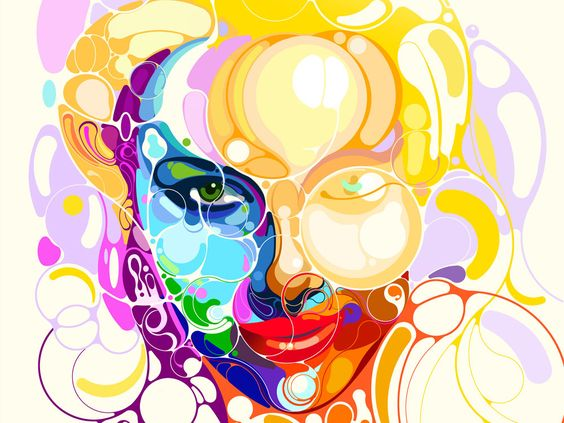
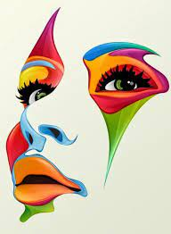

"LA ESTETIZACIÓN DEL MUNDO"
Que ha pasado con el mundo actual en el que vivimos, ya las cosas no valen lo mismo que valían antes, no se les da la misma importancia, que en alguna época se le dio. En el mundo actual las cosas se ven desde lo económico y el valor que tiene dependiendo de su demanda y de la belleza que imparta, ante los ojos de quien lo ve, el cómo repercute en estos y por ende en todos nosotros es la cuestión.
Un sistema dominado por el lucro que se genera, donde se han peleado constantemente los puntos de vista socialistas y capitalistas. Pero ambos llegando a la conclusión de una necesidad del movimiento económico clara, para el sostenimiento de todo en cuanto conocemos. El tiempo consiguió desequilibrar el común humano y la desaparición de la armonía, y el gusto por la vida.
Lipovetsky (2007) afirma que la economía liberal destruye el encanto del mundo buscando un a igualdad insulsa e inservible en nuestra vida social, ya que propone las mismas condiciones tanto para el comercio, aeropuertos, centros turísticos, entre otros. Ya que las industrias crean objetos contaminantes no solo hablando de un este ambiental a su vez visual, emocional y hasta espiritual. Llenando de vulgaridad e idiotez todo aquello que consumimos.
Con todo esto resaltamos la triste baja del concepto de lo que es bello por realzar la fealdad de otros entre estos objetos, valorando cada vez menos lo estético. Todo enfrascado en un legado de ambición y codicia, cuyo única importancia la tendrá cuantos ceros tiene el billete, no que aporta a nuestra gente, a nuestro intelecto, a eso a lo que llamamos cuerpo y es estático, no momentáneo como los placeres que da el dinero. Todas estas situaciones reafirman lo devastador que trajo la economía liberal, en un mundo que no sabe que es libertad, porque solo pasamos a ser esclavos de objetos sin vida y sin valor real.
La lógica actual productiva dejo de ser el generar para suplir una necesidad, paso a ser el sobreproducir y el exceso de consumo, para un ente que nunca está lleno, que nunca es suficiente como lo es el ojo de un humano cegado.
Se estétizo tantos entes que ya no se conoce uno sin esto, ahora abundan los diseños, los estilos, los tipos, las clases, y hoy en día en un nivel material y de lujo que no abunda. Pero no deja de ser contradictorio tenemos más opciones pero a su vez dejamos de lado las pasiones y la diversión por una fiebre de confort; tenemos todo al alcance de nuestras manos y el 80 % de la población ya no disfruta de buscar más allá. Son libres de elegir lo que ya conocen lo que ya tienen presente, pero y lo demás, que pasa con lo nuevo, con lo desconocido, con el misterio y la adrenalina. Ese riesgo ya poco lo corren.
El ser humano actual, le gusta sentir tanto y a la vez es tan insensible, por eso se tiene tanto de todo y a la vez no se tiene nada, es como entre más cosas externas tiene para generar sensaciones momentáneas, más vacío y hueco se vuelve su interior. Porque cuántos de ellos no les gratifica instantáneamente tener su nuevo Ferrari rojo, para pasearse y sentirse llenos con los elogios y la envidia de los demás, pero cuan pocos son aquellos cuya verdadera gratitud, es interna, al respirar y sentirse vivos, al cuya roja arde cuando la de otro se derrama, cuantos buscan experiencias inolvidables, en vez de cosas efímeras.
A veces podemos decir que inhumano es el humano, cuyo sentimiento más arraigado y el cual ha movido más desastres es el odio, su sed de poder y de fama, nunca se llena; y cuyo sentimiento de amor y empatía se va por el caño, cuyo sentido del ser, del vivir y del vivir de otros se evapora, como los ríos de nuestra actual sociedad, a causa de esta misma.
Para nuestra suerte aún hay personas este suelo y hubo quienes lo pisaron, que no se rigen por estos pasos que otros ya plasmaron, Se rigen por el sentir y el expresar, en lo que aquellos considerar basura, emanan su odio en obras perfectas y vuelven de lo imperfecto algo simplemente inexplicable pero reconfortante a nuestra alma. A estos que si considero guerreros, los llamo artistas. Por qué mantienen con vida, lo que siempre está a punto de extinguirse. De esto no tenemos un híper consumo porque no todos siente la presencia de las emociones que se impregnan en papel, en tela o en madera. Ya que la felicidad no la encontramos en un multiplicador de satisfacción.
No propongo que no sea bueno el consumo, ya que es necesario para cubrir las necesidades de todos y cada uno de nosotros, pero hay una alta diferencia cuando algo sea para mantenernos en una vida estable y plena a un exceso por unos ostentar cuando otros, no saben si hoy podrán comer,
En pocas palabras, nos encontramos en un punto de decisión, si mantenemos sobrellevando nuestros días con gratificación instantánea, para mantenernos relativamente felices, o si, tomamos la situación como un aprendizaje pasado para volver a ser seres sintientes y expresivos, que realmente piensan, y no solo se dejan llevar por el instinto animal de supremacía. Ya no estamos aprendiendo a sobrevivir ahora debemos aprender a vivir.